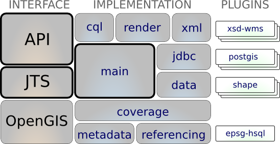

JTS¶
The JTS Topology Suite is an external project that GeoTools uses to provide an implementation of the Geometry data structure. The major benefit is the numerically stable geometry operations as a result of years of dedicated effort.
GeoTools is all about implementing spatial solutions, and we do our very best to follow a don’t invent here policy (rather than get off topic). The excellent JTS Topology Suite project offers an implementation of Geometry which we use throughout our library.
The GeoTools provides some help for working with JTS:
- gt-api offers helper classes (such as JTS and Geometries) and extends JTS with a CurvedGeometryFactory for working with curves.
- gt-main offers helper classes to translate Geometry into a Java Shape for display
References
- http://sourceforge.net/projects/jts-topo-suite/
- http://tsusiatsoftware.net/jts/main.html
- http://www.vividsolutions.com/jts/bin/JTS%20Developer%20Guide.pdf
- http://www.vividsolutions.com/jts/bin/JTS%20Technical%20Specs.pdf
Maven:
<dependency>
<groupId>com.vividsolutions</groupId>
<artifactId>jts</artifactId>
<version>1.12</version>
</dependency>
Contents